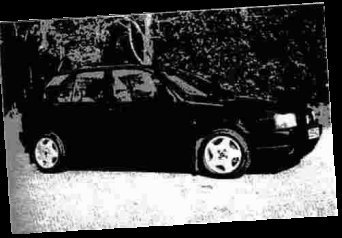

| FIAT TIPO 16v |
| ROY TOMLINSON |

About 18 months ago I happened to drive past the local Fiat dealership one evening and there stood a Sedicivalvole Tipo 5-door. The car looked in immaculate condition with only 22000 miles on the clock. I was able to take it out for a test drive the following day after the garage had put a couple of pounds worth of petrol in it so I could only take it 3 or 4 miles. Eventually I phoned them from about 5 miles away saying I had just put another £5 in and would see them later!The first thing that struck me about the car was the intoxicating sound of the twin cam engine and the mass of torque. I was hooked!
A 1992 model with one very careful owner, the car had been traded in for a new Fiat Coupe 16v. It was so clean that it didn't even need a valet. The asking price was £6495 which was reasonable considering the condition. The only work needed was to have the wheels refurbished.
One minor problem with the car was difficulty in starting from cold, which was traced to a hairline crack in the distributor. Regularly serviced at the main dealership, the car has now covered 50,000 miles.
Fuel consumption is between 23 and 25 mpg becoming worse when you take advantage of the power. Servicing costs are quite reasonable, but consumables such as brakes and exhausts can be expensive from dealerships and are often cheaper from local motor factors.
I am looking to buy another car for travelling to and from work and keeping the 16v for pleasure, as the performance and handling package even today is hard to match for the price. I have been in touch with a few other 16v owners via the Internet and according to one there were only about 1,000 right hand drive versions made for the UK. One enthusiastic owner has even created a web site dedicated to the model. The 'sedicivalvole' written across the tailgate does seem to provoke discussion from other drivers at traffic lights, but they never get close enough to see it for long.